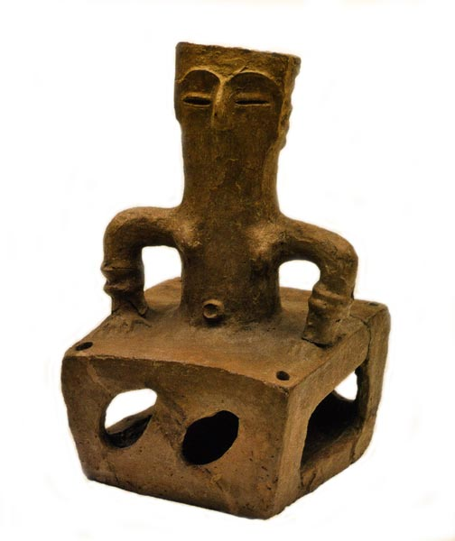

Праисторија
Градот Битола со пелагонискиот регион е многу богат со артефакти од праисторискиот период.
Два најзначајни локалитети се Велушка Тумба и Тумба Бара, коишто се наоѓаат близу селото Породин.
Од бакарната доба, тука се наоѓалиштата Тумба (покрај селото Црнобуки), Шуплевац (покрај селото Суводол) и Висок Рид (покрај селото Букри).

Стар век
Градот бил основан во предримскиот период, веројатно од страна на македонскиот крал Филип II.
Според пишаните извори, по освојувањето на Линкестида, Филип II подигнал тврдина преку која можел да контролира дел од кралството.
Низ Хераклеа минува познатиот римски пат Виа Игнација (Via Ignatia).
Во периодот на II век п.н.е. кога Македонија станува римска провинција, Хераклеја станува силен економско-политички центар.
Голем број од градбите во Хераклеа се со римски карактер.
Среден век
За време на Големата преселба на народите, Хераклеа е 2 пати нападнат и запален градот од страна на Готите.
Во текот на VI век градот повторно бил нападнат од варвари, меѓу кои Аварите и Словените и при крајот на VI век животот во Хераклеја дефинитивно замира.
На почетокот на VII век словенското племе Брсјаци, се населуваат близу Хераклеа и тука се издигнува нов град тогаш споменуван под името Бутелла, Бутили, Обител, подоцна Монастир и Манастир.
Сите овие поими имаат исто значење - Манастир, така бил наречен градот затоа што во неговата близина имало голем број на манастири.
Овој град имал големи тврдини кои со времето и пустошењето биле уништувани.
Од XIV век натаму, Битола станува значаен град кој има трговски врски со познатите трговски градови Дубровник и Венеција. Со ова започнува јакнењето и развивањето на градот.
Османлиски период
Почетокот на турските војувања на Балканот најавиле и нова ера на живеење.
Турските војски во текот на 1382-1383 година по многу тешки и крвави борби и по исклучително жестокиот отпор кој го пружило локалното население конечно успеале да ја освојат Битола.
Крвавите битки кои се воделе во овој период влијаеле врз масовно раселување на еден поголем дел од населението од Битола во околните села, што делумно го олеснило колонизирањето на несловенско муслиманско население.
Од овој период всушност започнува и „ориенталното” вообличување на градот што било резултат токму на изградбата на ваквиот тип објекти, но и на ориенталните градителски техники и стилови.
Во периодот на XVI - XVII век, од страна на турската администрација градот Битола започнува да биде именуван како Манастир или Толи Манастир.
Сепак во целиот период на своето постоење името Битола никогаш не било заборавено туку напротив од страна на христијанското население тоа било во секојдневна употреба.
Битола поради својата местоположба, на крстопатот помеѓу сите најзначајни патни правци, уште од најраниот период на турското завладување го добила заслуженото значење при што станала значаен воено - стратешки центар што било потврдено во 1830 год. кога таа станува и политички центар на Румелискиот Вилает.
По распаѓањето на тимаро - спахискиот систем и интензивираните малтретирања од страна на турксата власт дошло и до нови промени во етничката структура на населението во Битола.
Во врска со ваквата ситуација важно е да се спомене повторното населување на дел од христијанското население од селата во градот.
Етничката и верската разноликост и толеранција доаѓа до израз и при доселувањето на голем број Евреи од Шпанија и Португалија во текот на XV - XVI век.
Со влегувањето на овој поинаков етнички и културен елемент се зголемила разноликоста на културната слика на градот.
Двете најголеми еврејски синагоги, кои денес за жал не постојат, биле значаен елемент во религиозната разноликост на градот.
Со доаѓањето на Евреите во Битола започнале да се чувствуваат и промени во развојот на трговијата и занаетчиството.
Евреите како познати трговци дале неоспорен допринос во развојот и проширувањето на трговските врски на Битола со најзначајните европски и светски трговски центри.
Со доселувањето на Евреите во Битола не биле запрени етничките промени во регионот, затоа што веќе во XVIII век во околните села, но и во градот, се чувствува сé поголемо присуство на Власи.
Во почетокот на XIX век, период на економски просперитет, во Битола постоеле многу пазари и околу триесетина други локации каде се произведувале и продавале различни производи.
Во периодот на процут на занаетчиството во Битола постоеле преку 130 видови на занаети, наменети за задоволување на потребите на населението и војската, но и производи наменети за странските пазари.
Трговскиот и занаетчискиот подем на градот сосема разбирливо довеле и до своевиден економскиот просперитет на Битола.
Економскиот просперитет на Битола во текот на XIX век извршил и своевидно влијание во акцентирањето на неговата стратешка и политичка улога.
Во Битола била сместена и 30 000 војска.
Средината на XIX век е период кога најголемите европски сили сакајќи да го зајакнат своето влијание на Балканот, а потоа и да го прошират кон исток започнуваат да ги засилуваат своите дипломатски активности.
Ваквите интереси довеле до оформување на една нова поинаква „Конзулска Битола”.
Може слободно да се рече дека во овој период Битола достигнува највисок економски, политички, па и културен просперитет.
Ова е период кога најмоќните европски сили Англија, Австрија, Франција, Италија, Русија, Србија, Романија, Бугарија и Грција во Битола отворија свои конзуларни претставништва.
Со ова доаѓа и до промена на архитектурата на Битола.
Богатите битолски фамилии почнуваат и да купуваат клавири, иако немаат музичари во своето семејство.
Со ова Битола добива нов епитет „градот на клавирите“.
Широк Сокак, главната градска улица станала место каде богатите дами и госпоѓи секогаш дотерани по најнова мода.
Овој период на раскош, вечерни балови и конзулски забави не бил многу долг.
Покрај целокупното изобилство и богатство на градот и одреден круг на негови жители, сепак Битола претставувала и град во кој бројот на сиромашните бил исклучително висок.
Лошата економска состојба кај дел од населението не само во Битола туку и воопшто во Империјата, постепено наоѓа одраз и во нејзините бројни внатрешни превирања што довело до драстични општествени и политички промени.
Големиот гнев и револт бил отсликан со голем број востанија, од кои најголемо Илинденското востание, како и Младотурската револуција.
Сјајот и падот на величествената Битола, неговото богатство и сиромаштија остана засекогаш овековечена од оштрото око на првите сниматели на Балканот, браќата Манаки.
Балкански војни
Првата Балканска војна, засекогаш ставила крај на петвековното турско владеење во Битола и Македонија.
За време на Првата балканска војна во околината на градот се водела Битолската битка во којашто отоманската војска била победена од страна на српските сили.
По неа следувала Втората Балканска Војна, така што светлината на ослободувањето била со краток век затоа што едното ропство било заменето со друго.
Прокламирајќи се како ослободители српските војски набрзо ги покажале своите вистински територијални аспирации.
Со поделбата на Македонија и со поставувањето на границите со Грција дошло до значителен застој и постепено замирање на трговските врски кои Битола ги имала со Солун а од таму и со останатите европски центри.
Прва светска војна
Овојпат српската краткотрајна окупација во 1915 година по започнувањето на Првата светска војна е заменета со бугарската.
Бугарските окупатори опстојувале во Битола само една година, по што во 1916 година Битола потпаѓа повторно под власта на сојузничките војски (Италија, Англија, Русија и Србија).
Војските на сојузниците во овој период го запоседнале градот поставувајќи ја фронтовската линија со Централните сили во близина на Битола.
На овој начин Битола повторно останува во жарот на борбите и насилствата.
Ваквата состојба се одразила исклучиво негативно во сите сфери на егзистирање на градот и неговото население.
Мирисот на чад и смрт бил постојаното секојдневие на градот сé до 1918 год.
Како резултат на ваквата долгогодишна воена состојба градот започнал да наликува на град - сениште, град кој сиот свој сјај за само неколку години го заменил со вечна темнина и град кој сиот свој бурен живот го заменил со смрт.
Битола станала гробница за стотици и илјадници војници.
Германските, француските и српските гробишта се еден нем сведок кој на единствен и невообичаен начин доволно „зборува” за сите страдања и патила на луѓето.
Втора светска војна
За време на Втората светска војна, градот најпрво бил окупиран од Германците, а подоцна Бугарите.
На 11 март, 1943 година, целокупното еврејско население од Битола (3.011 Евреи) било депортирано во логорот Треблинка во Полска од страна на фашистите.
Во септември 1944, Бугарија капитулирала и започнала да се повлекува од Југославија и Битола била ослободена од македонските партизани каде на 4 ноември 1944, Седмата македонска бригада победнички влегла во Битола.
Во 1945, во Битола била отворена првата гимназија (наречена „Јосип Броз Тито“) на која се предавало на македонски јазик.
По ослободувањето
Со завршувањето на Втората светска војна дојде до драстични промени во сите сегменти на човековото живеење.
Долгоочекуваната слобода конечно пристигна и во Битола по што по долгогодишните војни и превирања конечно дојде до стабилизирање на состојбата.
Новата власт воведува реформи со што веднаш доаѓа до стабилизирање на политичката состојба и значително подобрување на стандардот на живеење на луѓето.
Со распадот на Југославија во 90тите години од XX век, доаѓа до транзиција во економската сфера.
По осамостојувањето на Македонија транзициониот период продолжува, по што еден значаен дел од општествените организации отидоа под стечај за да на крајот бидат распродадени и ликвидирани.
Ваквата појава значително ја влоши економската состојба на населението, но сепак во Битола и денес опстојуваат и успешно работат не само општествени туку и приватни компании.
Но, во последните години со процесите на децетрализирација воведени се нови проекти во корист на граѓаните.
Само на ваков начин и со максимално залагање, Битола ќе го врати вистинскиот сјај на градот кој всушност не исчезнал туку е тука некаде притаен околу нас.